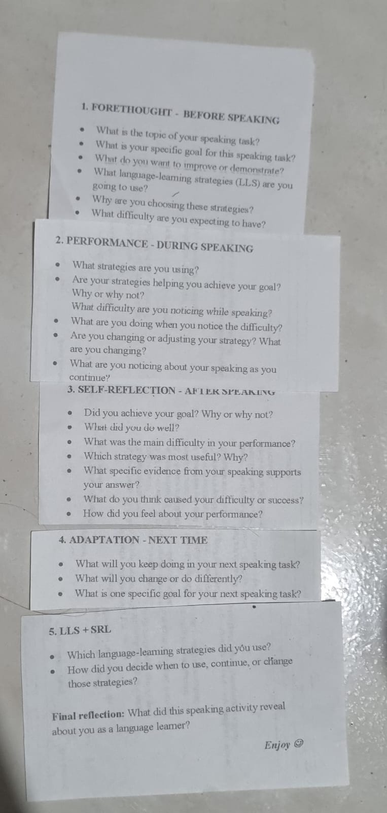

Active Student • 7th Semester
María Alejandra Acosta
Portfolio L.L.S
Portfolio L.L.S

My name is María Alejandra Acosta. I am 21 years old and currently in my seventh semester of the Bachelor's Degree in Spanish and English Teaching. My passion for becoming an educator comes from a very personal place: I want to transform the way languages are experienced in the classroom. Looking back at my own journey, I often felt the limitations of rigid, traditional methods, and that is why my purpose as a future teacher is to ensure my students have far better, warmer, and more inspiring experiences learning Spanish and English than the ones I had. I want to build a space where they feel truly supported, confident, and excited to discover their own voices through language.
Rebecca Oxford’s Language Learning Strategies: Memory, Cognitive, and Social Taxonomies.

Creating this infographic on Rebecca Oxford’s Language Learning Strategies was our first activity in the course, and it helped me connect theoretical concepts with visual organization. Looking at what we did well, I think the overall structure and synthesis of the content worked nicely. my group and I divided the poster into three clear categories (Memory, Cognitive, and Social strategies) and used short bullet points, concrete classroom examples like pair work and clarification questions, and visual aids such as comic strips and small drawings. Organizing the information this way made the theory more approachable and easier to follow rather than overwhelming.
However, looking back at how we presented the topic, there are areas that did not go as well. In particular, my group and I did not distribute our speaking time equally, so some classmates ended up talking much more than others during the presentation. Because the turns were unbalanced, we rushed through parts of the explanation and did not have enough space to discuss how teachers can actually model these strategies for students who struggle with speaking anxiety. Relying a bit too much on listing the subcategories instead of analyzing their practical impact in class also made our delivery feel uneven.
To improve in future presentations and teaching tasks, I would organize the time distribution with my group beforehand and assign balanced sections so every member has an equal opportunity to participate. Doing a brief rehearsal together would also help us control our pacing and ensure that each strategy is explained with clear, relatable classroom examples rather than just definitions. Applying cooperative and self-monitoring strategies to our own teamwork will help us communicate course concepts more effectively next time.
Strategy Inventory for Language Learning (SILL) & Individual Profile Report.

Completing the Strategy Inventory for Language Learning (SILL) and building my LLS profile allowed me to examine my own habits as an English learner with greater self-awareness. Regarding what I did well, I was able to interpret my results honestly and connect them to real classroom situations rather than simply repeating numbers. Recognizing that my strongest areas are managing emotions and learning with others helped me to understand why I naturally lean toward socio-affective strategies, such as calming my anxiety before speaking, accepting errors as part of learning, and rehearsing ideas with peers. I also translated my lowest score, remembering more effectively, into a concrete and realistic development goal by designing a weekly vocabulary log with original sentences and short active-recall reviews.
However, this activity also revealed areas where both my learning habits and my written analysis were not as strong. In my daily study routine, I have relied too much on acquiring new words passively through reading or listening without reviewing them systematically afterward, which explains my low score in memory strategies and my moderate average in compensating for missing knowledge.
To improve moving forward, I want to balance my socio-affective strengths with more intentional memory and metacognitive strategies. Putting my action plan into practice by reviewing eight to ten new words each week and actively using them in class discussions will help me retain vocabulary more effectively. At the same time, paying closer attention to how all six strategy groups work together, and carefully proofreading my written reflections will help me become both a more autonomous learner and a more reflective future language teacher.
Dynamic theoretical examination of metacognitive self-regulation in language acquisition.
Making this video on metacognitive strategies helped me see how learners take charge of their own progress. What worked well for my group was presenting solid theory in a dynamic, conversational way. We contrasted Oxford’s early definition of Language Learning Strategies (LLS) with her 2017 view of strategies as dynamic thoughts regulating cognitive, emotional, and social aspects. Explaining indirect metacognitive strategies through relatable examples, linking modal verbs to prior knowledge, setting SMART goals, and practicing honest self-evaluation, made the topic easy to follow.
However, looking back at the video, there are a couple of aspects we did not handle as well. Because we spent more time on the definitions and the first two strategies, our explanation of self-evaluation near the end felt a bit rushed. In addition, we focused mostly on what independent learners do on their own without discussing how language teachers can explicitly model and scaffold these metacognitive habits during regular classes.
To improve future videos and teaching tasks, I would organize our pacing more evenly so that every strategy receives the same level of detail. Including a brief classroom connection on how teachers guide students to set goals and assess their progress would also strengthen the pedagogical value while keeping our natural, engaging style.

Forethought, Performance, and Self-Reflection applied to authentic speaking activities.

Working through the guiding questions based on Zimmerman’s Self-Regulated Learning model after listening to "Wake Me Up When September Ends" helped me notice how I actually use Language Learning Strategies while speaking. One thing I think I did well was taking a moment to prepare my mind during the Forethought stage before talking. Setting a clear goal for what I wanted to share about the song and choosing strategies ahead of time, like calming my nerves and connecting the lyrics to vocabulary I already knew, helped me start the conversation feeling much more grounded.
However, there were a couple of things I did not handle as effectively. During the Performance stage, it was challenging to monitor my strategy use while simultaneously trying to speak smoothly about the song. At times, I hesitated when searching for the right words to express deeper ideas, and I did not switch to compensation strategies as quickly as I could have.
To improve in future speaking tasks, I want to apply the Adaptation stage by training myself to use paraphrasing or simpler expressions right away whenever I forget a specific word. I also plan to take quick notes immediately after speaking so I can remember concrete moments when I changed or kept a strategy, making my self-evaluation much clearer and more useful for my growth as a future language teacher.

Episode 4: "From Theory to Practice" • SRL & Language Learning Strategies in Teaching Decisions.
Recording Episode 4 of our podcast, "From Theory to Practice," helped me connect Self-Regulated Learning (SRL) and Language Learning Strategies directly to everyday teaching decisions. What my group and I did really well was organizing the academic content clearly and logically. We explained how teachers can explicitly model strategies, such as using mental imagery or word grouping for vocabulary, guide students through planning, monitoring, and self-reflection, and adapt their support to the local classroom context rather than following generic programs blindly. Laying out the roles of both teachers and learners in a structured way made the theoretical ideas easy to follow.
However, there were a couple of technical and format details we did not handle as well. Because our group had to split into two subgroups of three and record separately, my subgroup’s section ended up having noticeably poor audio quality. In addition, the format felt quite flat since we simply recorded ourselves talking in front of the camera, which made the episode feel more like a plain presentation than a lively podcast conversation.
For future projects, I would plan ahead with my group so we can either record together in a quiet place or test our microphones beforehand to keep the audio clear and consistent. I would also focus on making the discussion feel like a genuine conversation, reacting to each other's points and sharing short classroom scenarios, rather than simply talking straight into the camera.
Task-Based Language Teaching (TBLT) Design: Meaningful Memories, Past Tense, and Affective Regulation.
What I think my group and I did best was creating a warm, low-stress atmosphere right from the start. Beginning with the "nervous thermometer," a quick breathing reset, and our own imperfect story from the Memory Box helped our classmates relax and see that making mistakes was completely normal. Setting up the "Memory Circles" with rotating role and adding a short mid-task checklist pause also worked nicely because it kept everyone supportive and gave speakers a clear moment to check in with themselves and adjust before the second round.
At the same time,carrying out so many steps within a single 45 minute session brought a few challenges.Moving from the warm-up and five-keyword planning into two speaking rounds, the self-monitoring pause, and the Padlet activity meant we had to watch the clock constantly, which left the final Self-Reflection stage feeling a bit rushed.
Next time I teach a lesson like this, I would simplify some of the transitions so we can save a few extra minutes at the end for students to write their Padlet reflections and reply to their peers calmly. I would also take a brief moment before the first speaking round to reassure students that pausing or stumbling over a past verb is part of the process, helping them trust their affective strategies and focus on sharing their memory rather than trying to sound perfect.